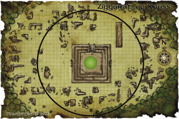

Week 33 - Penetrating the ring
I have so totally left this too late. I'll only be able to sketch out what happened.
Vision: King Kyuss
The ruins of Kuluth-Mar seem to be suffused with a strange taint that hovers just beyond the edges of reality. Like an oily stain spreading over a pool, a vision wavers in the air. Within the tainted energy is a man seated on a great throne made of green stone. He wears ornate plate armor, and a black circlet rests on his brow. Both the circlet and armor are adorned with silver symbols—an overlapping skull and scythe. The vision expands, widening its scope to reveal that the throne is located at the apex of the large ziggurat and in the shadow of the spire. The spire itself gleams with flashes of white light, and at its peak is balanced a fifteen-foot-tall black stone monolith shaped like a trapezoid. Around the ziggurat spreads a thriving city, its streets paved in white stone, its buildings painted and whole. Thousands of figures have gath- ered in the large open plaza that surrounds the ziggurat, all facing the figure seated at its center. Their cries are a rhythmic chant, surging like waves on the monolith’s shore. As these cries rise in volume, threatening to shake the jungle apart, the vision fades and is replaced by the ruined city of today.The party teleport to the ancient city of Kuluth-mar. As they step out of the treeline, they have a vision. It occours in a flash, between one heartbeat and the next, a vision of King Kyuss and the city as it was. In the distance they can see a great ziggurat, encircled by an impossible black ring. They elect to go forward, but first Flash disguises the entire party as a group of Jaguars.
On closer inspection, the ring seems to be a single piece of obsidian. On it's surface in draconic are written, over and over, the words "Kyuss forever bound". The party cross the barrier. There is a bit of a tingle, but no obvious ill effect. Before them is the ziggurat itself. Above is is a great spire,and Gauthakan (of all people) notices out of the corner of his eye a flicker of something, a stain in the air at the ruined tip of it. But the party decide to ignore it for now. There are two obvious entrances, and the party pick the east one.
The moment they advance within the entrance, they are attacked. A Knight of Kyuss is here, and a pair of disgusting giant beetles. Without going into detail, they fight and defeat the beetles, and press on in.
There's an enormous pit in the ground here, but nothing much happens. They decide to try the north door.
Vision: The Gift
The ruins of the room waver and fade, replaced by a well-equipped torture chamber. Wailing victims strapped to horrific devices hang in the background from chains. In the foreground stand two figures. One is a handsome man dressed in flowing robes. Facing him is a strange, sixarmed creature that looks as much insect as it does humanoid. The insect creature’s eyes are hollow sockets containing a pinpoint of light deep within. Its flesh is rotting and festering, and the green robes it wears are old and moth-eaten. The creature wields a long green crystal rod in one hand, a cruel hooked rod in another. In two other hands it holds a jeweled gold box that it presents to the man, who takes it and sets it upon a table. He opens it and, using a pair of iron tongs, withdraws a writhing green worm. The man’s expression changes to one of exaltation as he looks upon the worm… and then the vision fades.